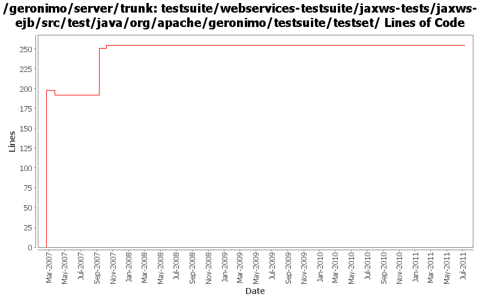

[root]/testsuite/webservices-testsuite/jaxws-tests/jaxws-ejb/src/test/java/org/apache/geronimo/testsuite/testset

| Author | Changes | Lines of Code | Lines per Change |
|---|---|---|---|
| Totals | 11 (100.0%) | 344 (100.0%) | 31.2 |
| prasad | 1 (9.1%) | 198 (57.6%) | 198.0 |
| gawor | 7 (63.6%) | 143 (41.6%) | 20.4 |
| xuhaihong | 1 (9.1%) | 1 (0.3%) | 1.0 |
| jgenender | 1 (9.1%) | 1 (0.3%) | 1.0 |
| jdillon | 1 (9.1%) | 1 (0.3%) | 1.0 |
GERONIMO-6058 Replace StringBuffer usage with StringBuilder
1 lines of code changed in 1 file:
Make deployment of EJB-based JAX-WS web service with WebServiceContext injection work
2 lines of code changed in 1 file:
sprinkle some timeouts
4 lines of code changed in 1 file:
jndi name madness: switch to default jndi name to make tests work again
1 lines of code changed in 1 file:
improved tests and added a basic test case for exception handling
126 lines of code changed in 1 file:
fix ejb test
7 lines of code changed in 1 file:
remove slash as the tomcat valve problem is fixed. thanks jeff
1 lines of code changed in 1 file:
updated endpoint address uri for ejb ws
2 lines of code changed in 1 file:
Patched GERONIMO-2954
1 lines of code changed in 1 file:
Std props
1 lines of code changed in 1 file:
* GERONIMO-2861. Thanx Jarek.
198 lines of code changed in 1 file: